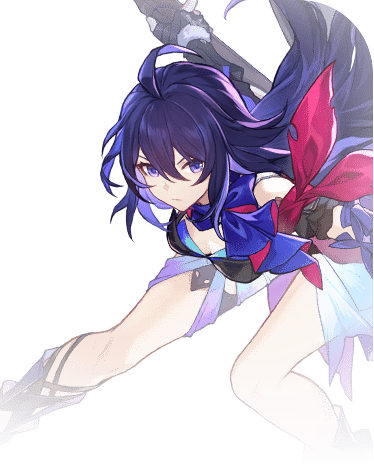

Descripcion del personaje
Seele es el primer personaje de cinco estrellas obtenible a través del banner promocional en Honkai Star Rail. Es un personaje que pertenece al Elemento Cuántico y a la vía de la Cacería, por lo tanto posee un rol de DPS Principal especializado en el single target.
Este personaje destaca por la gran Velocidad que posee (que además se potencia al usar su Habilidad Básica) y lo mejor es que tiene un talento que le permite tener otro turno para atacar tras derrotar a un enemigo con cualquiera de sus habilidades, cosa que a pesar de ser un personaje de un vía especializada en atacar a un solo enemigo, la hace también un buen personaje para limpiar enemigos en batallas con muchos monstruos.
Lo malo es que este efecto no puede acumularse y volver a tener otro turno si mata a otro enemigo en el adicional, pero si tras esto ejecutamos su Habilidad Definitiva y matamos a otro monstruo, podremos encadenar hasta 4 ataques seguidos.
Introduccion al personaje
Seele es un personaje distinto, aunque comparte algunas similitudes en cuanto a su personalidad y habilidades. Es miembro de la Ciudad Subterránea de Belobog, una parte oculta y empobrecida del planeta Jarilo-VI, y pertenece al grupo conocido como los Wildfire, que lucha contra la opresión de la élite que vive en la ciudad en la superficie.
Seele en Star Rail es una luchadora de espíritu libre, decidida y valiente. Aunque también tiene un trasfondo trágico, en este juego se la ve como una persona que lucha por proteger a los oprimidos y defender a sus amigos. A diferencia de su versión en Honkai Impact 3rd, aquí Seele no tiene el alter ego de Veliona, pero sigue siendo un personaje con mucha determinación y un gran sentido de justicia.

Calidad del personaje

VIA del personaje
Caceria
Estadisticas del personaje
- PV: 931
- ATQ: 640
- DEF: 363
- VEL: 115
- Provocacion: 75